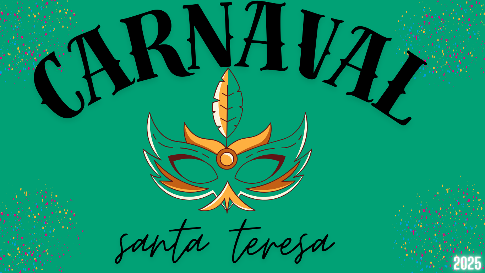

Santa Teresa
O Carnaval de Santa Teresa é um dos mais autênticos e encantadores do Rio de Janeiro, com uma atmosfera boêmia e cheia de charme. O bairro, conhecido por suas ladeiras, casarões históricos e estreitas ruas de paralelepípedos, se transforma em um verdadeiro palco de festas e blocos de rua durante o carnaval, trazendo um clima mais intimista e alternativo, com uma mistura de música, arte e cultura. Santa Teresa atrai muitos cariocas e turistas que buscam uma experiência carnavalesca mais autêntica e sem o grande foco do turismo massivo. A vibe do bairro durante o carnaval é muito ligada à tradição dos blocos de rua, com um toque de irreverência e um ambiente mais familiar, sem perder a animação.
Alguns dos blocos mais populares de Santa Teresa incluem: Bloco da Preta (ou Bloco da Preta Gil): Este bloco também marca presença em Santa Teresa e reúne um público grande e eclético. Ele mistura samba com outros ritmos, e a energia é sempre muito contagiante. Bloco "Simpatia é Quase Amor": Com um clima mais descontraído e alegre, o bloco atrai muitos foliões para as ladeiras de Santa Teresa, com marchinhas e sambas, sendo um dos blocos mais conhecidos da região. Bloco da Rua dos Invalidos: Com um toque de nostalgia e espírito de rua, este bloco reúne as pessoas para uma festa descontraída, com a beleza do bairro como pano de fundo. Além dos blocos, o bairro tem uma grande cena artística e cultural, com festas em bares, casas de show e até em espaços públicos, como praças e centros culturais. O Circo Voador, que é um dos maiores e mais tradicionais espaços de cultura do Rio, também costuma sediar eventos e festas especiais para o carnaval. A grande atração de Santa Teresa é justamente a sua atmosfera única, que mistura tradição e modernidade, com uma pegada mais alternativa, onde as pessoas se conectam de uma maneira mais íntima. O ambiente é muito mais tranquilo do que o das grandes avenidas e pontos turísticos do Rio, o que permite uma experiência mais descontraída, mas igualmente cheia de energia. O carnaval de Santa Teresa também é conhecido pela diversidade musical. Além do samba, você vai encontrar blocos com outros estilos, como rock, funk e música eletrônica, tudo isso com o charme único do bairro.
